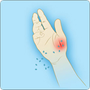
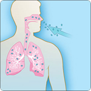
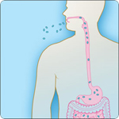

Recommended Specimens for Microbiology and Pathology for Diagnosis of Anthrax
 ShareCompartir
ShareCompartir
Cutaneous, gastrointestinal, inhalation, injection and meningeal anthrax can be diagnosed using a combination of microbiology and pathology testing methods. Specimens should be collected for any patient with symptoms compatible with anthrax, with or without a confirmed epidemiological link to a known or high risk exposure.
Prior to sending specimens to CDC for anthrax diagnostic testing, first consult with and obtain authorization from your state health department and contact the CDC Emergency Operations Center at 1-770-488-7100 for an anthrax testing consultation. Once approval has been obtained from your state health department and from CDC, please submit your specimen following the recommendations below.
Note: These recommendations also apply to specimen submissions for identification of infections caused by Bacillus cereus biovar anthracis.
Recommended specimens by clinical presentation
Culturing B. anthracis from clinical specimens is the gold standard for diagnosing anthrax. If anthrax is suspected, clinical specimens, including blood cultures, should be collected before starting antimicrobial therapy. Culture will likely be negative if clinical specimens are collected after initiating antimicrobial therapy, regardless of the form of disease (cutaneous, gastrointestinal, inhalation, injection, or meningeal anthrax). However, other tests not requiring viable organism may be positive after antimicrobial use, if collected as directed below.
Depending on the form of disease, organisms can be cultured from the following specimens:
- Blood
- Skin lesion exudates
- Pleural fluid
- Cerebrospinal fluid (CSF)
- Rectal swab
- Ascites fluid
- Tissues from biopsy or autopsy
Click on each tab for a list of recommended biological specimens that may be submitted for anthrax diagnostic testing. Note: On a case-by-case basis, one or more clinical specimens may be recommended for submission, as available.
Specific packaging and shipping information by specimen and test type:
Recommended specimens by clinical presentation
1. Lesion swabs:
- Vesicular lesions: Two swabs of vesicular fluid from an unopened vesicle, one for culture and one for real-time polymerase chain reaction (PCR).
- Eschars: Two saline-moistened swab samples, rotated underneath the eschar, one for culture and one for real-time PCR.
- Ulcers: Sample the base of the lesion with two saline-moistened swabs, one for culture and one for real-time PCR.
2. Biopsy:
- A full thickness biopsy of a papule or vesicle, including adjacent skin, for histopathology, special stains, and immunohistochemistry (IHC).
- Note: For patients who are not on antibiotic therapy or who have been on therapy for < 24 hours, a second biopsy sample should be collected at the same time and submitted for culture and real-time PCR.
3. Serum:
- An acute (≤7 days after symptom onset OR as soon as possible after a known exposure event) serum sample to test for anthrax lethal factor toxin.
- Acute and convalescent (14–35 days after symptom onset) serum samples for serologic testing.
4. Plasma:
An acute plasma sample to test for anthrax lethal factor toxin.
- Note: Plasma is the preferred specimen for anthrax lethal factor toxin testing.
5. Blood:
If there are signs of systemic anthrax infection (i.e., febrile or hypothermia, tachycardia, tachypnea, hypotensive), collect blood specimen before starting antimicrobial therapy for culture and real-time PCR.
6. CSF:
To be submitted for patients with severe headache, meningeal signs, altered mental status, seizures, or focal signs for culture and real-time PCR.
7. Autopsy Tissues:
To be collected in fatal cases for histopathology, special stains, and IHC.
1. Serum:
- An acute (≤7 days after symptom onset OR as soon as possible after a known exposure event) serum sample to test for anthrax lethal factor toxin.
- Acute and convalescent (14–35 days after symptom onset) serum samples for serologic testing.
2. Plasma:
- An acute plasma sample to test for anthrax lethal factor toxin.
- Note: Plasma is the preferred specimen for anthrax lethal factor toxin testing.
3. Blood:
To be drawn before starting antimicrobial therapy for culture and real-time PCR.
4. Pleural Fluid:
To be tested for culture and real-time PCR, as well as anthrax lethal factor toxin.
5. CSF:
To be submitted for patients with severe headache, meningeal signs, altered mental status, seizures, or focal signs for culture and real-time PCR.
6. Biopsy:
Pleural and/or bronchial biopsies for IHC.
7. Autopsy Tissues:
To be collected in fatal cases for histopathology, special stains, and IHC.
1. Oropharyngeal lesion swab, if present:
To be tested for culture and real-time PCR.
2. Serum:
- An acute (≤7 days after symptom onset OR as soon as possible after a known exposure event) serum sample to test for anthrax lethal factor toxin.
- Acute and convalescent (14–35 days after symptom onset) serum samples for serologic testing.
3. Plasma:
- Acute plasma samples for testing of anthrax lethal factor toxin.
- Note: Plasma is the preferred specimen for anthrax lethal factor toxin testing.
4. Blood:
To be drawn before starting antimicrobial therapy for culture and real-time PCR.
5. Ascites Fluid:
To be tested for culture, real-time PCR, and anthrax lethal factor toxin testing.
6. Rectal swab:
To be tested for culture and real-time PCR.
7. Autopsy Tissues:
To be collected in fatal cases for histopathology, special stains, and IHC.
 1. Serum:
1. Serum:
- An acute (≤7 days after symptom onset OR as soon as possible after a known exposure event) serum sample to test for anthrax lethal factor toxin.
- Acute and convalescent (14–35 days after symptom onset) serum samples for serologic testing.
2. Plasma:
- An acute plasma sample to test for anthrax lethal factor toxin.
- Note: Plasma is the preferred specimen for anthrax lethal factor toxin testing.
3. Blood:
To be drawn before starting antimicrobial therapy for culture and real-time PCR.
4. Biopsy:
Tissue biopsy from localized lesion tissue debridement.
5. Autopsy Tissues:
To be collected in fatal cases for histopathology, special stains, and IHC.
Meningitis can complicate cases of cutaneous, gastrointestinal, inhalation, and injection anthrax cases. Meningitis may also be the primary sign of anthrax in patients without a clear source of exposure. The following specimens should be submitted in patients with severe headaches, meningeal signs, altered mental status, seizures, or focal signs.
1. Serum:
- An acute (≤7 days after symptom onset OR as soon as possible after a known exposure event) serum sample to test for anthrax lethal factor toxin.
- Acute and convalescent (14–35 days after symptom onset) serum samples for serologic testing.
2. Plasma:
- An acute plasma sample to test for anthrax lethal factor toxin.
- Note: Plasma is the preferred specimen for anthrax lethal factor toxin testing.
3. Blood:
To be drawn before starting antimicrobial therapy for culture and real-time PCR.
4. CSF:
To be tested for culture and real-time PCR.
5. Autopsy Tissues:
To be collected in fatal cases for histopathology, special stains, and IHC.
- Lesion Swabs - Cutaneous
- Lesion Swabs - Gastrointestinal
- Biopsy – Cutaneous
- Biopsy – Injection
- Biopsy – Inhalation
- Serum
- Plasma
- Blood
- Pleural Fluid - Inhalation
- Cerebrospinal Fluid (CSF) – Meningeal
- Ascites Fluid - Gastrointestinal
- Autopsy Tissues - Inhalation
- Autopsy Tissues
Specimen Collection and Processing
The specific location of swab sampling will depend on the stage of the lesion.
Note: Regardless of the stage of the lesion, collect 2 separate swabs. One swab will be for culture, and the second swab will be for real-time polymerase chain reaction (PCR).
- Vesicular Stage
- Aseptically collect vesicular fluid on sterile dry swabs from previously unopened vesicles
- Eschar Stage - collect the eschar material by:
- Carefully lift the eschar’s outer edge
- Insert a sterile moist swab (pre-moistened with sterile saline).
- Rotate the swab slowly for 2-3 seconds beneath the edge of the eschar before removing it.
- Ulcer - if no vesicle or eschar is present:
- Swab the base of the ulcer using a sterile moist swab (pre-moistened with sterile saline).
Specimen Submission
- For samples intended for culture OR both culture and real-time PCR:
- Ship using cold packs and store at 2-8°C
- For samples intended for real-time PCR testing only:
- Ship on dry ice and store at -70°C
Specimen Collection and Processing:
The specific location of swab sampling will depend on the type of the patient’s lesion(s).
Note: Regardless of the stage of the lesion, collect 2 separate swabs. One swab will be for culture, and the second swab will be for real-time polymerase chain reaction (PCR).
- Oropharyngeal
- Use a sterile moist swab (pre-moistened with sterile saline) to aseptically swab the surface and edge of suspected lesions. Lesions may be present:
- In the oropharynx or buccal cavity.
- On the tongue, tonsils, or posterior pharyngeal wall.
- Use a sterile moist swab (pre-moistened with sterile saline) to aseptically swab the surface and edge of suspected lesions. Lesions may be present:
- Intestinal
- Use a sterile dry swab to collect a rectal swab.
Specimen Submission
- For culture OR both culture and real-time PCR:
- Ship using cold packs and store at 2-8°C
- For real-time PCR testing only:
- Ship on dry ice and store at -70°C
- Specimen Collection and Processing
A skin biopsy should be taken for all patients with a lesion being tested for cutaneous anthrax, preferably before the patient has started antibiotic treatment. Biopsies should be taken from both the vesicle and eschar, if present.
- If the patient has not started antibiotics OR antibiotics have been started within 24 hours:
- Take a full thickness punch biopsy specimen for culture and real-time PCR, and
- Take one full thickness punch biopsy sample from the papule or vesicle (include adjacent skin) for histopathology, special stains, and IHC.
- If the patient is on antibiotics at the time of presentation:
- Take one full thickness punch biopsy sample from the papule or vesicle (include adjacent skin) for histopathology, special stains, and IHC.
- Place the sample into 10% buffered formalin for fixation. Do not freeze.
- If the patient has not started antibiotics OR antibiotics have been started within 24 hours:
- Specimen Submission
- If the samples are formalin-fixed, ship to CDC at room temperature. Do not freeze.
- If the specimen is fresh-frozen, store at -70°C and ship to CDC using dry ice.
- Biopsy specimens should be accompanied by supporting documents, including:
- A brief clinical history and description of the lesion.
- A chronology of the presentation of the lesion(s).
- A description of the treatment course (with duration and dosage).
- The date of biopsy in relation to the initiation of antibiotic treatment.
- A photograph, digital image, or diagram of the biopsy sites.
For additional instructions on pathology testing, visit the Infectious Diseases Pathology Branch website
- Specimen Collection and Processing
Tissue samples can be obtained for patients with symptoms of injection anthrax during lesion debridement procedures or surgical interventions. - Specimen Submission
- If the samples are formalin-fixed, ship to CDC at room temperature. Do not freeze.
- If the specimen is fresh-frozen, store at -70°C and ship to CDC using dry ice.
- Biopsy specimens should be accompanied by supporting documents, including:
- A brief clinical history and description of the lesion.
- A chronology of the presentation of the lesion(s).
- A description of the treatment course (with duration and dosage).
- The date of biopsy in relation to the initiation of antibiotic treatment.
- A photograph, digital image, or diagram of the biopsy sites.
For additional instructions on pathology testing, visit the Infectious Diseases Pathology Branch website
- Specimen Collection and Processing
A bronchial or pleural biopsy can be obtained for patients with symptoms of inhalation anthrax.
- Specimen Submission
- If the samples are formalin-fixed, ship to CDC at room temperature. Do not freeze.
- If the specimen is fresh-frozen, store at -70°C and ship to CDC using dry ice.
- Biopsy specimens should be accompanied by supporting documents, including:
- A brief clinical history and description of the lesion.
- A chronology of the presentation of the lesion(s).
- A description of the treatment course (with duration and dosage).
- The date of biopsy in relation to the initiation of antibiotic treatment.
- A photograph, digital image, or diagram of the biopsy sites.
For additional instructions on pathology testing, visit the Infectious Diseases Pathology Branch website
Cutaneous, Gastrointestinal, Inhalation, Injection and Meningeal
Serum testing can be used to determine if the body has developed an immune response to anthrax.
Serology Testing
- Serum samples for serological testing should be sent in pairs, including:
- An acute serum specimen (≤7 days after symptom onset OR as soon as possible after a known exposure event)
AND - A convalescent-phase (14–35 days after symptom onset) specimen. It is recommended that the convalescent-phase specimen be taken 2 weeks after the acute specimen.
- An acute serum specimen (≤7 days after symptom onset OR as soon as possible after a known exposure event)
Lethal Factor (LF) Toxin Testing
- Specimens for lethal factor (LF) testing may be collected from 0 to 18 days after suspected exposure or the onset of symptoms. Earlier is preferred because of gradual declines in toxin levels during antimicrobial therapy.
Collecting, Preparing, and Shipping Serum Specimens
- Follow CDC's instruction to collect, prepare and ship serum .
- Process serum specimen using Biosafety Level (BSL) 2 practices. (see Biosafety in Microbiological and Biological Laboratories).
- DO NOT send blood culture bottles or whole blood.
Cutaneous, Gastrointestinal, Inhalation, Injection and Meningeal
Plasma testing can be used to determine if anthrax lethal factor toxins are present in the body.
Specimen Collection and Processing
Specimens for lethal factor toxin testing may be collected from 0 to 18 days after suspected exposure or the onset of symptoms. Earlier is preferred because of gradual declines in toxin levels during antimicrobial therapy.
- Collect 10 mL using EDTA purple top tube.
- Keep the specimen on ice for 30 minutes, then centrifuge.
Specimen Submission
- Ship specimens using dry ice.
Cutaneous, Gastrointestinal, Inhalation, Injection and Meningeal
Specimen Collection and Processing
- Blood Culture
- Collect specimens prior to starting antimicrobial therapy.
- Collect the blood volume and number of sets as instructed by hospital laboratory protocol.
- Note: for Cutaneous Anthrax: Collect specimen for blood culture if the patient shows signs of systemic infection.
- Real-time polymerase chain reaction (PCR)
- Collect 10 mL blood in EDTA or Sodium Citrate (purple or blue top tubes). For pediatric cases, collect volumes allowable.
Specimen Submission
- Ship specimens for blood culture and real-time PCR using cold packs
Specimen Collection and Processing
- Collect > 1 mL of pleural fluid into a sterile container for culture, real-time polymerase chain reaction (PCR), and anthrax lethal factor toxin testing
- Pleural fluid specimens should be stored at 2-8°C for no more than 24 hours
Specimen Submission
- Ship specimens using cold packs
Specimen Collection and Processing
- Collect > 1mL of CSF into a sterile container for culture and real-time polymerase chain reaction (PCR)
- Ship specimens using cold packs
- Collect the appropriate volume of ascites fluid, according to local hospital protocol, for culture, real-time polymerase chain reaction (PCR), and anthrax lethal factor toxin testing
- Specimen should be collected prior to starting antimicrobial therapy
Specimen Collection and Processing
- It is preferable to submit a minimum of 8 blocks and fixed tissue representing different pulmonary sites for histopathology, special stains, and IHC, such as:
- Hilar lung with regional lymph nodes, bronchi, and trachea.
- Peripheral pulmonary parenchyma from both lungs.
- Representative portions from all major organs (lung, heart, liver, kidney, spleen, and brain), particularly those organs showing significant gross or microscopic pathology.
Specimen Submission
- Paraffin-embedded tissue blocks (preferred specimen)
- It is important to submit tissue blocks before tissues have been in formalin for a significant time. Prolonged fixation (>2 weeks) may interfere with some IHC and molecular diagnostic assays.
- Wet tissue
- It is recommended that unprocessed tissues in 10% neutral buffered formalin be submitted IN ADDITION to paraffin blocks.
- Do not freeze formalin-fixed samples.
- Autopsy tissue specimens should be accompanied by supporting documentation, including:
- A completed CDC 50.34 form
- A cover letter outlining a brief clinical history, including relevant demographic/epidemiologic information
- A copy of (a) the autopsy report (preliminary or final) or (b) surgical pathology report
- Copies of laboratory results (microbiology, hematology, serology, culture, and/or biochemical)
- A description of the treatment course (with duration and dosage)
- Images (clinical and/or gross autopsy photos)
For instructions on autopsy testing, visit the Infectious Diseases Pathology Branch website.
Fatal Cutaneous, Gastrointestinal, Injection and Meningeal
Specimen Collection and Processing
- Preferred specimens for histopathology, special stains, and IHC. include:
- Paraffin blocks of tissues showing gross or microscopic pathology and representative tissues in formalin (such as areas of the gastrointestinal tract that show gross findings).
- Representative portions from all major organs (lung, heart, liver, kidney, spleen, and brain), particularly those organs showing significant gross or microscopic pathology
Specimen Submission
- Paraffin-embedded tissue blocks (preferred specimen)
- It is important to submit tissue blocks before tissues have been in formalin for a significant time. Prolonged fixation (>2 weeks) may interfere with some IHC and molecular diagnostic assays.
- Wet tissue
- It is recommended that unprocessed tissues in 10% neutral buffered formalin be submitted IN ADDITION to paraffin blocks.
- Do not freeze formalin-fixed samples.
- Autopsy tissue specimens should be accompanied by supporting documentation, including:
- A completed CDC 50.34 form
- A cover letter outlining a brief clinical history, including relevant demographic/epidemiologic information
- A copy of (a) the autopsy report (preliminary or final) or (b) surgical pathology report
- Copies of laboratory results (microbiology, hematology, serology, culture, and/or biochemical)
- A description of the treatment course (with duration and dosage)
- Images (clinical and/or gross autopsy photos)
For instructions on autopsy testing, visit the Infectious Diseases Pathology Branch website.
- Page last reviewed: January 30, 2017
- Page last updated: January 30, 2017
- Content source: